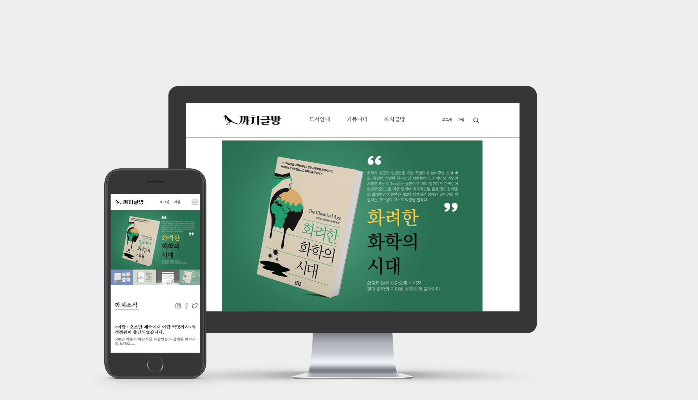

까치글방

PUBLISHING
00 Overview
출판사 까치글방 리디자인 및 반응형 웹사이트 제작
까치글방 공식 홈페이지를 리디자인했습니다. 가독성을 높이기 위해 서체의 종류와 크기를 변경하고 콘텐츠간의 간격을 넓혀 시원시원한 느낌을 살렸습니다. 모바일 기기에서도 유연하게 대응 가능하도록 반응형 웹사이트로 제작했습니다.
01 Site Information
Responsive
PC 1440px / Mobile 375px
Javascript / JSON / Ajex
02 Design
Concept
인문학 서적 위주의 양서를 출판하는 출판사의 스마트하고 진지한 이미지를 유지했습니다. 동시에 로고에 까치 일러스트를 사용하고 책 커버 사진을 큼직하게 사용해 약간의 친근감과 위트를 더하는 요소를 추가했습니다.
Keyword
CLEAN
SMART
FRIENDLEY
Color
#FFF
#000
#EEE
#0D6759
Typography
KOR
210 긴생머리 R (title)
Eulyoo1945
ENG
Eulyoo1945
03 Problem & Solution
헤더가 스크롤에 반응하여 사라지게 하는 애니메이션 구현에 어려움을 겪었습니다. Javascript로 일정 길이만큼 스크롤한 간격을 감지하고 스크롤되는 위 아래 방향에 각각 다른 움직임을 설정하는 것으로 해결했습니다.
attr 메서드로 만든 이미지 크게보기 창이 모바일 환경에서는 적당한 비율로 보이지 않았습니다. 콘텐츠 크기를 퍼센트와 픽셀로 지정하기보단 뷰포트 사이즈를 적극적으로 이용해서 제어했습니다.
애니메이션 효과가 들어간 서치 아이콘을 사용했으나 검색창 내부에 글씨가 입력되지 않는 문제가 있었습니다. 아이콘의 가로값과 입력창의 크기가 달라서 생긴 문제임을 파악하고 헤더 내부에서 입력창의 위치를 조절하는 것으로 해결했습니다.
이미지 위에 마우스를 올리면 이미지가 바뀌는 기능을 추가하고 싶었습니다. 처음에는 간단할 것 같았지만 반응형 사이트에서 사이즈 미스 없이 이미지를 깨끗하게 교체하는 것이 어려웠습니다. 백그라운드 이미지를 뒤에 놓고 그 위에 이미지 태그를 올린 후 커서를 올리면 위에 겹친 이미지가 투명해지는 방식을 사용해 구현했습니다.
04 Review
처음으로 반응형 웹사이트에 도전했습니다. 많은 기능을 처음으로 배우고 또 실제로 사용해볼 수 있었던 프로젝트였습니다. 모바일 버전을 구현하기 위해 기본적인 모바일 UI/UX 원칙을 공부했고, 웹 내부에 Javascript를 이용한 동작을 적용했습니다.
화면에 마우스를 올려주세요.